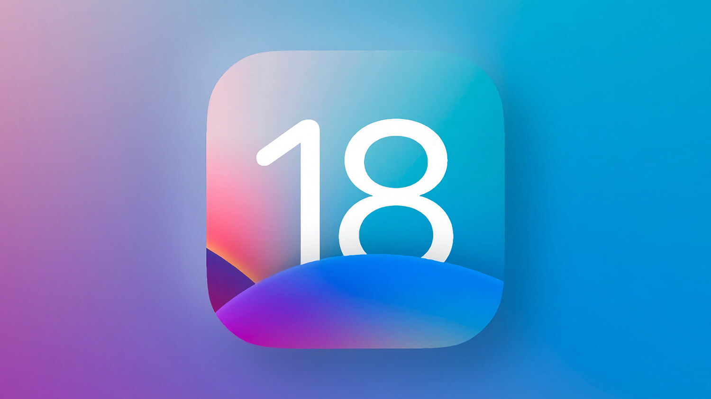
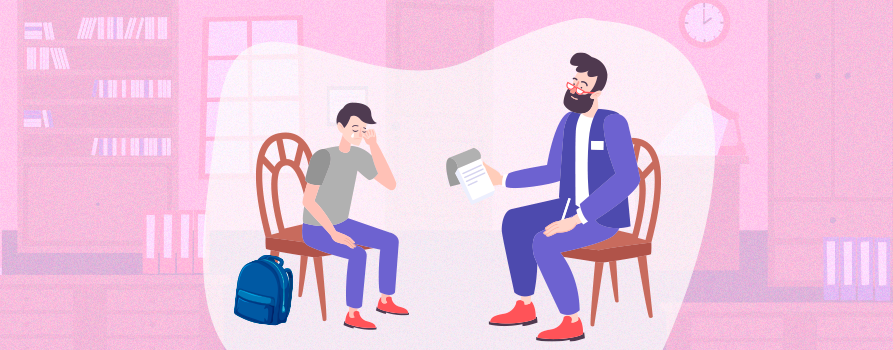

Tecnologia👨💻
iOS 18: Uma Nova Era de Personalização e Inteligência para o iPhone
O lançamento do iOS 18 está marcado para acompanhar a chegada do novo iPhone, com expectativas altas em relação às novidades que a próxima versão do sistema operacional da Apple trará. Anunciado inicialmente na Worldwide Developers Conference e disponibilizado em versão beta para desenvolvedores, o iOS 18 promete ser liberado ao público em um evento da Apple, possivelmente junto ou logo após a apresentação do iPhone 16.
Entre as possíveis novidades, destaca-se a reformulação do aplicativo Fotos, que abandonará o carrossel tradicional por uma versão customizada, permitindo aos usuários visualizar múltiplas coleções de fotos em destaque. Além disso, mudanças na interface, como a alteração dos botões de busca e seleção na grade de fotos, são esperadas.
Outro recurso antecipado é o "Distraction Control" no Safari, que permitirá aos usuários ocultar elementos distrativos temporariamente, como pop-ups e anúncios, melhorando a experiência de navegação. A aba "navegar" no aplicativo Música também passará por mudanças, sendo renomeada para "Você", refletindo uma personalização mais acentuada do sistema operacional.
Além das mudanças visuais, o iOS 18 deve trazer novos recursos de acessibilidade, como o Eye Tracking, que permite a navegação pelo iPhone apenas com o movimento dos olhos, e a possibilidade de bloquear e ocultar apps, aumentando a segurança e privacidade do usuário.
A personalização se estende aos ícones dos aplicativos, que poderão ser vinculados ao papel de parede, alterando o tom conforme as mudanças de fundo. Essa integração visual sugere uma experiência mais coesa e personalizada para os usuários do iPhone.
O iOS 18 também introduzirá a Apple Intelligence, uma tecnologia de inteligência pessoal que combina modelos generativos com contexto pessoal para oferecer uma experiência de usuário mais intuitiva e relevante. Projetada com foco na privacidade, essa tecnologia promete simplificar e acelerar as tarefas cotidianas, integrando-se profundamente ao iOS, iPadOS e macOS.
Com essas atualizações, a Apple busca não apenas melhorar a funcionalidade e eficiência do iPhone, mas também oferecer um nível de personalização inédito, que permitirá aos usuários moldar a experiência do dispositivo de maneira única e pessoal. O lançamento do iOS 18 é aguardado com grande expectativa, prometendo marcar o início de uma nova era de inteligência pessoal e personalização para os usuários da Apple.
Astronomia🌌
Brasil no Horizonte Cósmico: Participação Nacional em Projeto de Supertelescópio Revoluciona a Astronomia
O Brasil assegurou sua participação em um dos mais ambiciosos projetos astronômicos da atualidade: o Legacy Survey of Space and Time (LSST), que contará com a maior câmera digital do mundo. O acordo de cooperação científica, firmado com o SLAC National Accelerator Laboratory da Universidade de Stanford, estende-se até 2038 e coloca o país em uma posição de destaque no cenário da pesquisa espacial global.
O supertelescópio LSST, localizado no Observatório Vera C. Rubin, em Cerro Pachón, Chile, é um marco na astronomia, com sua câmera de 3,2 gigapixels e lente de 1,57 metro de diâmetro, ambas recordistas mundiais segundo o Guinness World Records. Este equipamento de ponta promete revolucionar o entendimento do cosmos ao mapear o céu do hemisfério Sul todas as noites por uma década, gerando 20 terabytes de dados diariamente.
A contribuição brasileira é significativa, com o envio de 120 cientistas, 80% dos quais são jovens pesquisadores, representando 26 instituições de ensino de 12 estados diferentes. O Brasil será responsável pela gestão de um centro de dados para armazenar e processar as informações coletadas pelo supertelescópio, além de desenvolver um software de Big Data específico para essa finalidade.
O astrofísico Luiz Nicolaci da Costa, diretor do Laboratório Interinstitucional de e-Astronomia (Linea), destacou a importância do projeto, afirmando que "tudo o que se move ou explode no Universo será detectado". O LSST fará um censo completo do Sistema Solar, proporcionando uma oportunidade única para a ciência brasileira integrar uma das maiores experiências científicas da história.
Com a promessa de capturar imagens detalhadas de estrelas, galáxias e asteroides, o LSST permitirá aos cientistas expandir o volume de galáxias visíveis e estudáveis. A expectativa é que as primeiras imagens sejam produzidas antes do fim de setembro de 2024, marcando o início de uma nova era na observação espacial.
Política🗳
Silvio Almeida: Ex-Ministro de Direitos Humanos Enfrenta Denúncias de Assédio Sexual e Gera Crise Política no Governo Lula
Silvio Almeida, ex-ministro dos Direitos Humanos e da Cidadania do Brasil, está no centro de uma controvérsia após denúncias de assédio sexual que emergiram na última semana. A ONG Me Too Brasil revelou que recebeu múltiplas denúncias contra Almeida, embora os nomes das supostas vítimas não tenham sido divulgados. De acordo com informações do portal Metrópoles, a ministra da Igualdade Racial, Anielle Franco, é uma das alegadas vítimas, mas ainda não se manifestou publicamente sobre o caso.
Almeida, que ocupou o cargo desde janeiro de 2023, após ser indicado no final de 2022, nega veementemente as acusações. Em uma nota oficial, ele repudiou as alegações, afirmando que são "mentiras" e que há uma tentativa de prejudicá-lo e deslegitimar suas lutas em defesa dos direitos humanos. O ex-ministro solicitou uma investigação rigorosa das denúncias, enfatizando que toda acusação deve ser baseada em evidências concretas.
Nascido em São Paulo, Almeida tem uma sólida formação acadêmica, com doutorado e pós-doutorado em Direito pela Universidade de São Paulo (USP) e graduação em Filosofia. Ele também é autor de diversos livros e foi presidente do Instituto Luiz Gama, que defende causas sociais, especialmente relacionadas a negros e minorias.
A situação gerou uma crise política no governo de Luiz Inácio Lula da Silva, com a Polícia Federal abrindo uma investigação para apurar as denúncias. Almeida, em sua defesa, destacou que as acusações podem ser parte de uma campanha para desacreditar sua imagem, especialmente por ser um homem negro em uma posição de destaque no governo. Ele se comprometeu a lutar pela verdade e pela emancipação das mulheres, reiterando que não permitirá que sua história e seu trabalho sejam apagados por falsas alegações.
Educação📚
A Importância de Priorizar a Saúde Mental nas Escolas: Um Caminho para o Bem-Estar dos Jovens
A saúde mental nas escolas é um tema cada vez mais relevante, especialmente em um contexto onde os jovens enfrentam pressões acadêmicas, sociais e emocionais intensas. Um artigo recente discute a importância de priorizar a saúde mental no ambiente escolar, destacando que o bem-estar emocional dos alunos é fundamental para seu desenvolvimento integral e aprendizado eficaz.
Estudos mostram que problemas de saúde mental, como ansiedade e depressão, afetam uma parcela significativa de estudantes, impactando não apenas seu desempenho escolar, mas também suas relações interpessoais e qualidade de vida. A falta de suporte adequado pode levar a consequências graves, incluindo evasão escolar e dificuldades na vida adulta.
O artigo enfatiza que as escolas devem implementar programas de apoio psicológico e capacitar educadores para identificar sinais de problemas emocionais. Criar um ambiente seguro e acolhedor é crucial para que os alunos se sintam confortáveis em buscar ajuda. Além disso, a promoção de atividades que incentivem a saúde mental, como mindfulness e exercícios físicos, pode contribuir para a redução do estresse e melhoria do clima escolar.
Dar atenção à saúde mental nas escolas não é apenas uma necessidade, mas uma responsabilidade coletiva que pode transformar a vida dos jovens, preparando-os para enfrentar os desafios do futuro de forma saudável e resiliente.